Caiya's Blog
Caiya's Life
Caiya's Music
Caiya's Sport
Weibo
August 19, 2020
继续刷圈。。。。。感觉虚脱了！！。。
暴汗暴汗暴汗
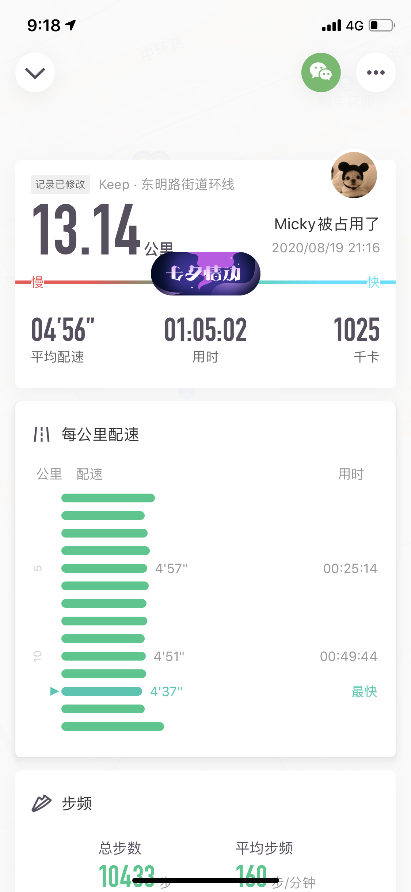
August 17, 2020
Continue！！！！！ 麻痹自己！
自律，自律
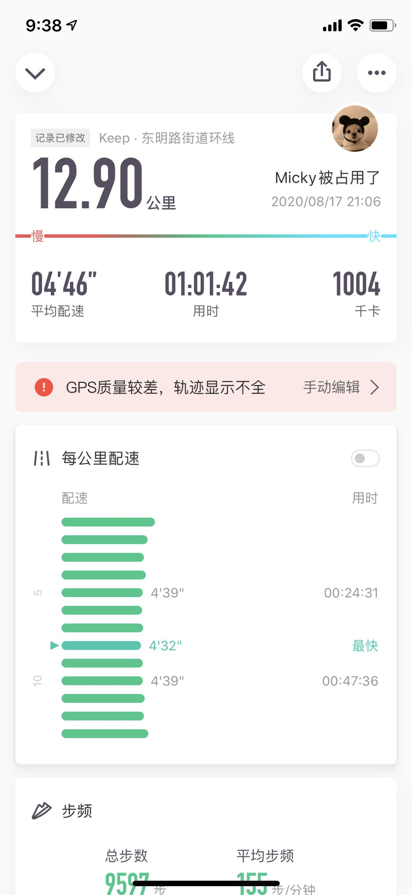
August 15, 2020
突然想跑这么个里程数
13.14 KM。。。。去掉球吧
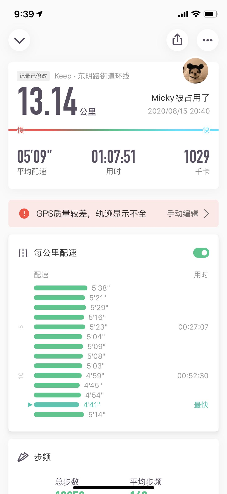
August 11, 2020
比之前真的肿了好多
恢复恢复恢复
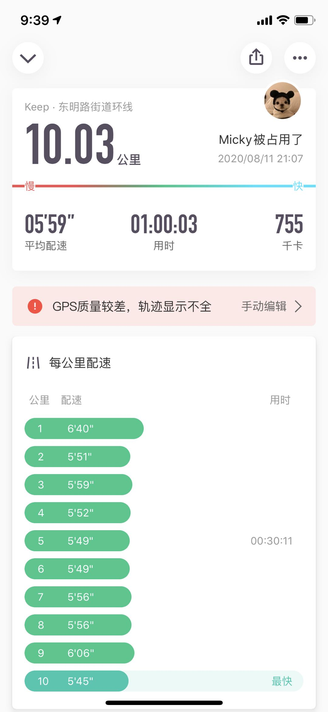
August 9, 2020
难受难受。。。
旺季旺季旺季。。加油
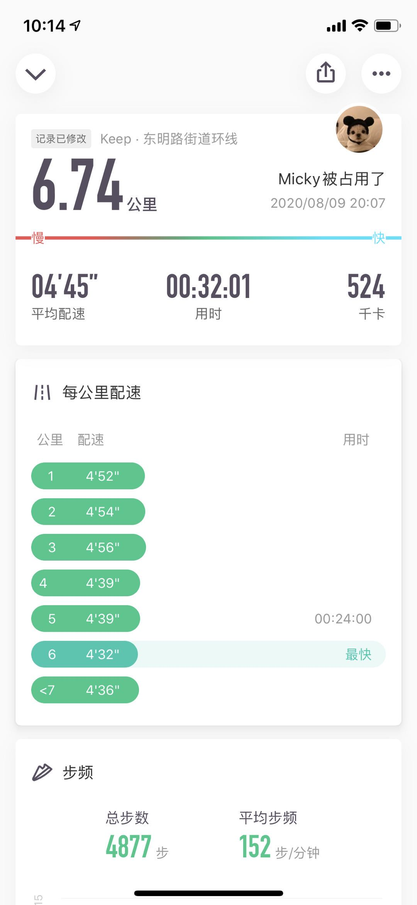
August 5, 2020
跑不动，身体累
心也累。。哈哈。。还是要积极向上，奔跑吧
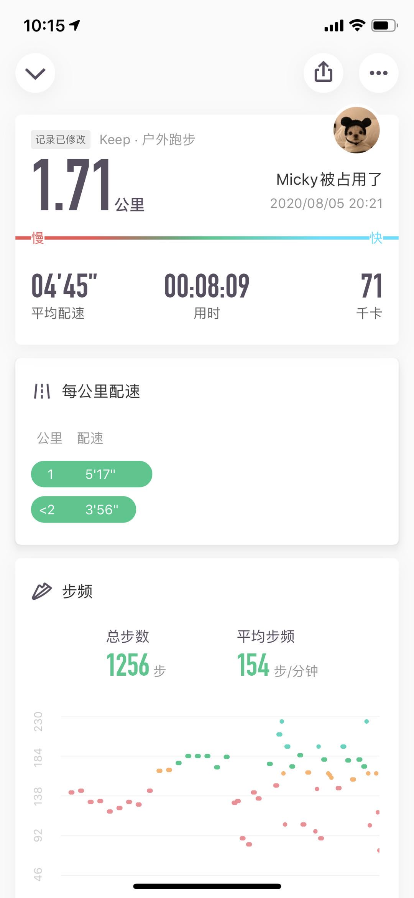
August 5, 2020
跑不动，身体累
心也累。。哈哈。。还是要积极向上，奔跑吧
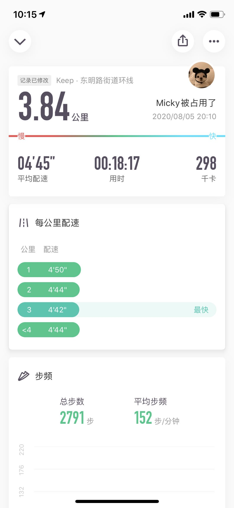
August 1, 2020
通过跑步放空自己
嘴上一片真真直言，内心却很老实。。。。我也有今天
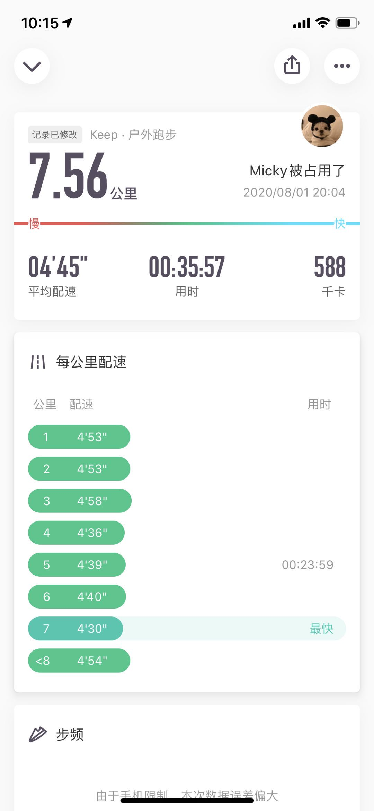
July 21, 2020
终于知道内心装着个人
是个什么滋味了，茶饭不想，而且还胡思乱想
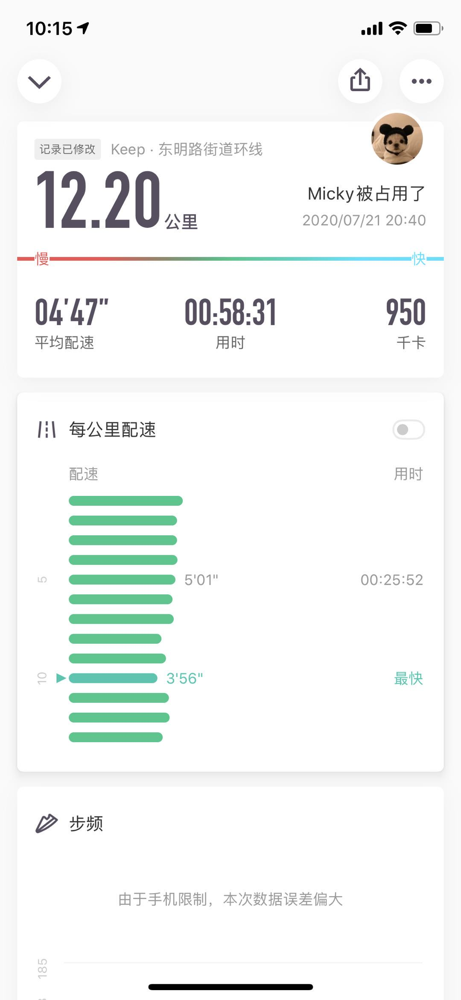
July 19, 2020
跑步跑步
我的自我不见了。。。。。
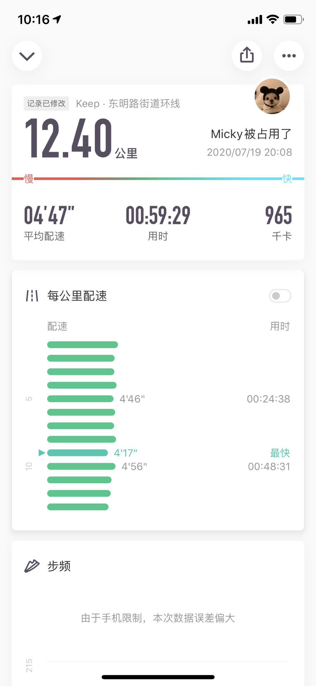
July 18, 2020
自律，自律，自律
今晚上又吃了个油焖土豆
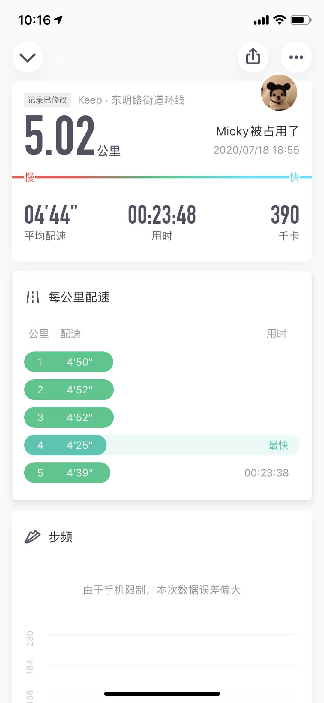
July 16, 2020
最近真的很不像我
我要古井无波古井无波....鞋托，做不到
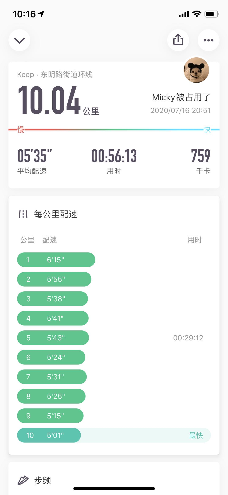
July 14, 2020
Fighting !
主动主动主动。。。努力向前！
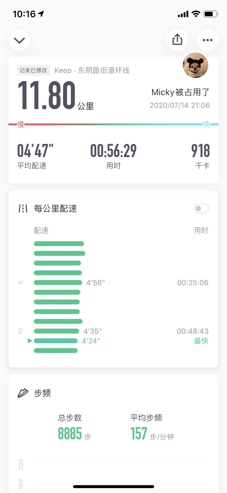
July 12, 2020
无所谓！！
谁还离不开谁呢。。。 加油加油
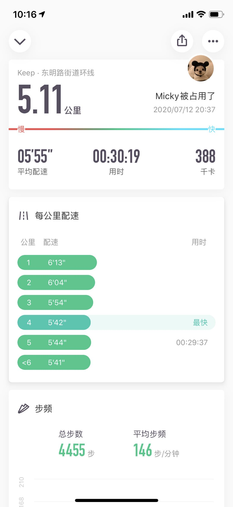
July 11, 2020
今天刷完了100到算法题
。。。 加油应该离阿里更近了吧！
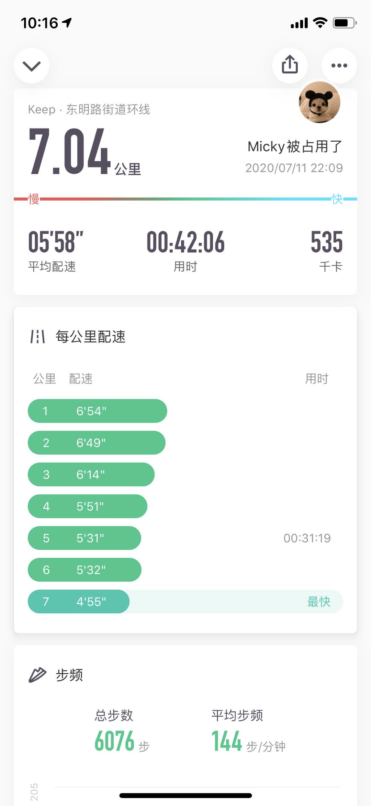
July 7, 2020
跑步 跑步 跑步
。。。 才能让我快乐！
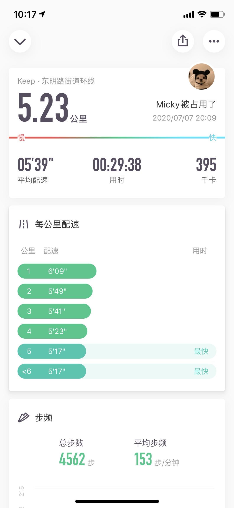
June 30, 2020
吃了一顿好的。。。
。。。 跑了一次爽的。。。抵消！
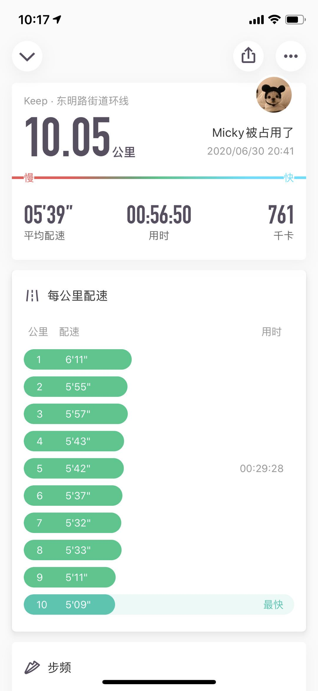
© Micky
Others:
Web Pager